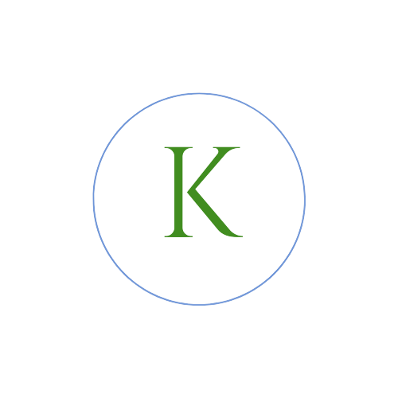

My Portfolio


Me
I am currently enrolled in UC Berkeley's Coding Bootcamp. I split time between the Central Valley and San Francisco Bay Area, often calling Oakland home. In asking the question of what would come next in my personal and professional journey, coding. was a consistent if not persistent answer. I welcome the challenge and cannot wait to explore what the course offers and what I can accomplish. I am most interested in helping women in Lubumbashi, Congo create and sustain businesses. My other goal is to see that every young girl can go to school regardless of financial or health conditions. In my free time, I collect plants, and from from time to time, finish a knitting project.